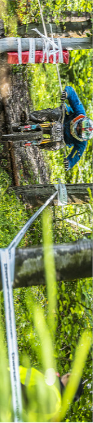

Wycieczka rowerowa!
Lipa
Wieś w Polsce położona w województwie podkarpackim, w powiecie stalowowolskim, w gminie Zaklików.
W latach 1975–1998 miejscowość należała administracyjnie do województwa tarnobrzeskiego.
Lipa powstała w XV wieku w centrum lasów naówczas zwanych bielskimi (od wsi Biała wzmiankowanej w 1245 roku), ale często była opuszczana przez mieszkańców i osadzana na nowo. Nie zamieszkana była również w 1596 roku, kiedy z włością gorajską została zakupiona przez Jana Zamoyskiego i włączona do ordynacji zamojskiej. W 1565 roku na północ od Lipy nad rzeką Sanną dziedzic Zdziechowic, kasztelan połaniecki Stanisław Zaklika otrzymał przywilej na lokowanie miasta Zaklikowa.
